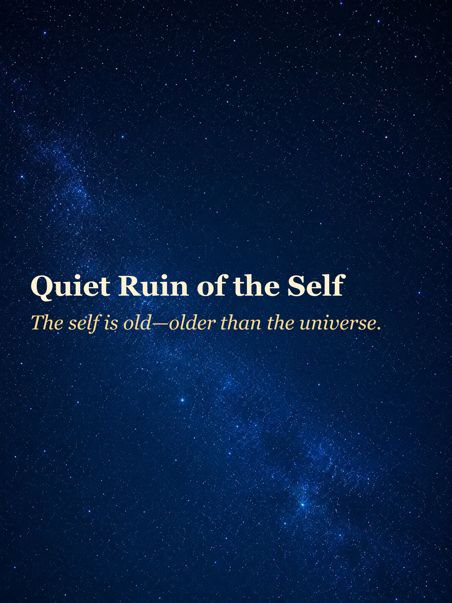
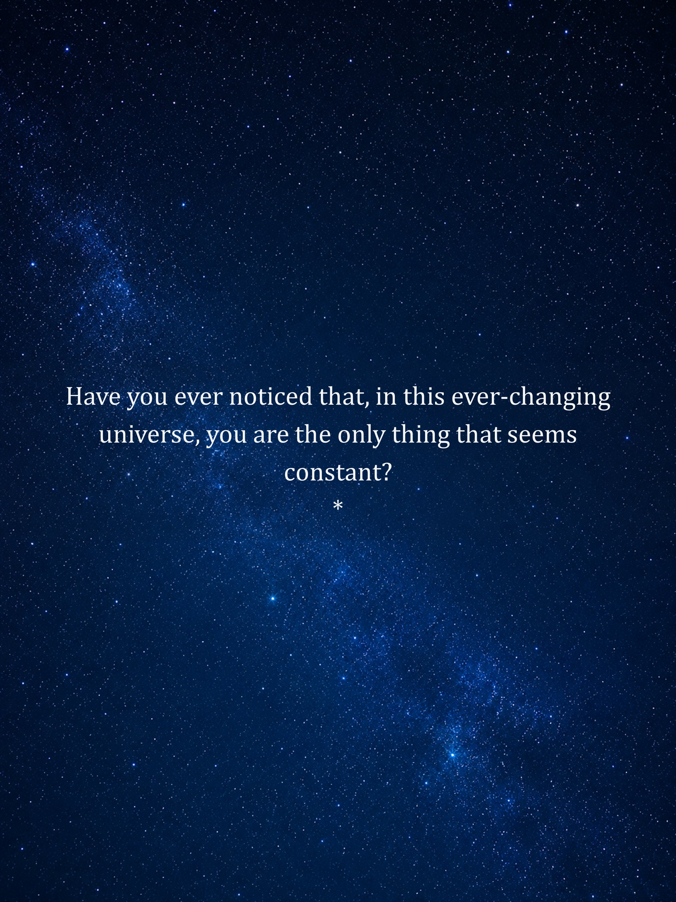
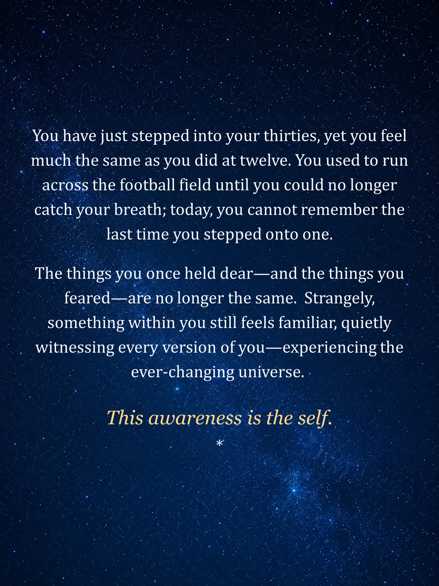
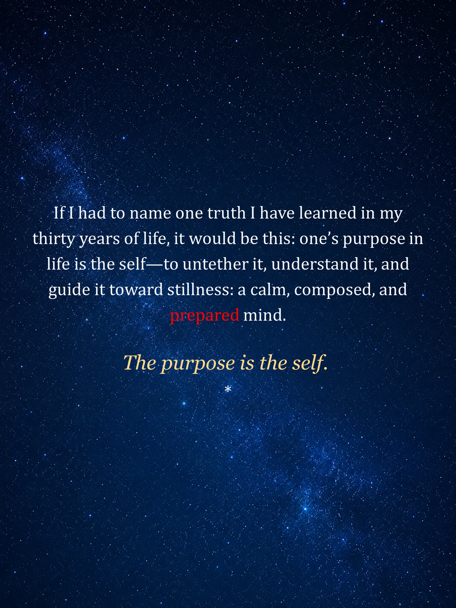
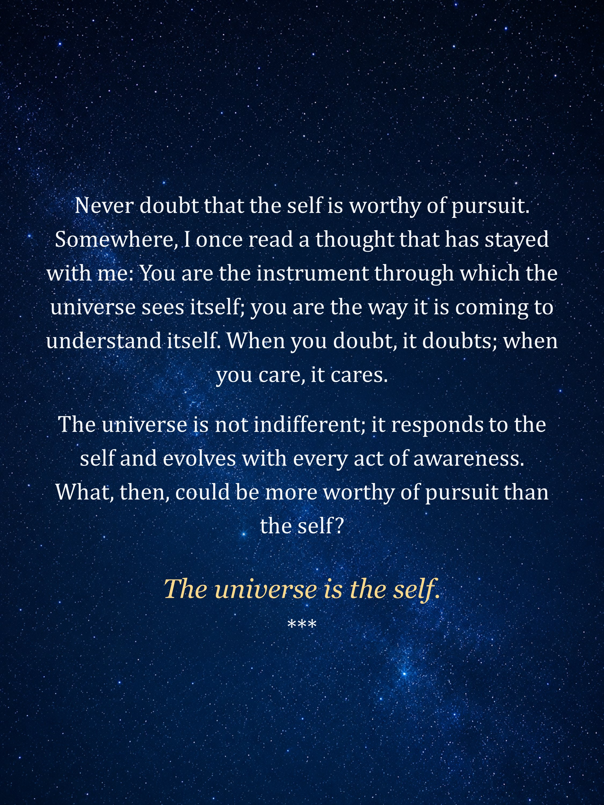
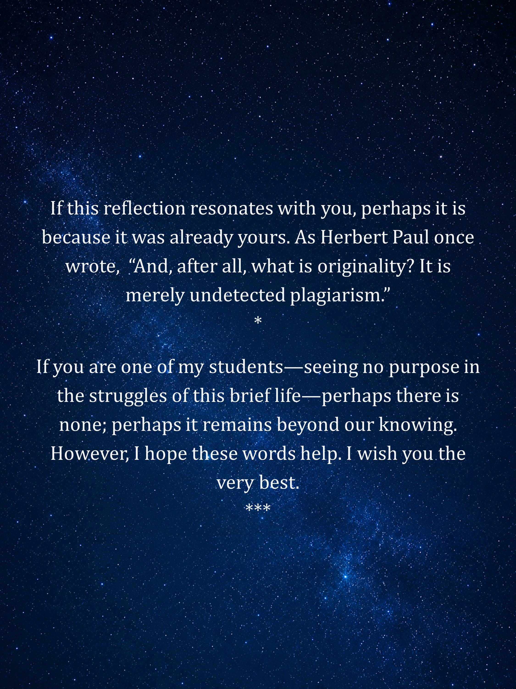

Quiet Ruin of the Self
The self is old - older than the universe.
This visual essay is presented as a sequence of image pages. Keep the text here short when the uploaded images already carry the main blog content.






Notes for editing
- Replace this file when you want to edit the rendered HTML content.
- Replace the images in this folder when the visual pages change.
- Bump the
versionvalue in../blogs.jsonafter edits.